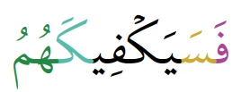
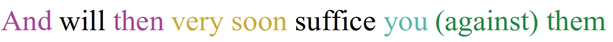
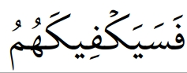
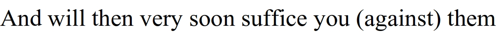

Let’s discuss coloring word-by-word translations. It’s an interesting topic because it can help us improve how much people understand The Qurʿān.
So let’s first start with the main question: why use colors?
Many translations are known as “word-by-word translations” while not actually trying to translate each word separately. To understand better what I mean, you first have to understand that in many languages a space indicates that a new word is starting. In Arabic though, you can have many words that are attached together without spaces in between. Let’s look at an example:
 Here the colors show you that we have 5 different words and show you which one is translated by what:
- فَ is translated by “And then”
- سَ is translated by “very soon”
- يَكْفِي is translated by “suffice”
- كَ is translated by “you”
- هُم is translated by “(against) you” and the “against” is in parentheses because هُم normally just means “they” or “them” but the “against” is added because it is clearly understood by everyone who knows classical Arabic that the “against” is present in the meaning.
Most “word-by-word translations” wouldn’t show that at all, they’d just show this:
 This is why I suggest improving word-by-word translations with colors. There has been some effort for that before but I haven’t seen a translation that truly applies this fully. I am adding colors to my translation these days and have made many algorithms to help me automate that task as much as possible. If you’re interested in helping this project for other translations like the English word-by-word translation then please do contact me.
Now onto the next question: how do we display such colors?
As for the translation, it’s easy: we can just add “spans” in html to indicate the color, like this: “(I read) <span style="color: rgb(85, 187, 170)">with</span> (The) Name”
Of course we should be using classes instead of just writing things like “style="color: rgb(85, 187, 170)"”. If we make classes we only need to declare the colors once and can be sure they stay consistent.
As for Arabic text, this solution would work in firefox but chrome can’t display it too well. I therefore recommend that we do the same as what is done for displaying tajweed in colors: use color fonts. I have modified the tajweed color font for Sūratū-l-Fātiḥah to instead use the concepts I just mentioned. You can see the results in the following link: click here for English and here for French
As you can see it’s working great and it’s an easy solution. Now modifying all the font files would take a few days so if you’d like to help then please contact me, the only things you need to know is how to deal with SVGs because color fonts are made basically the same way, you don’t need an advanced level though but just the basics of how they work.